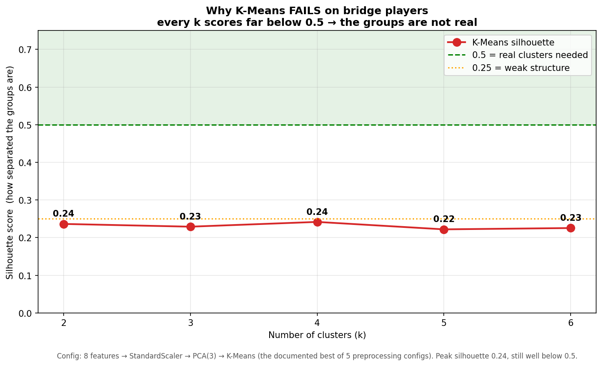
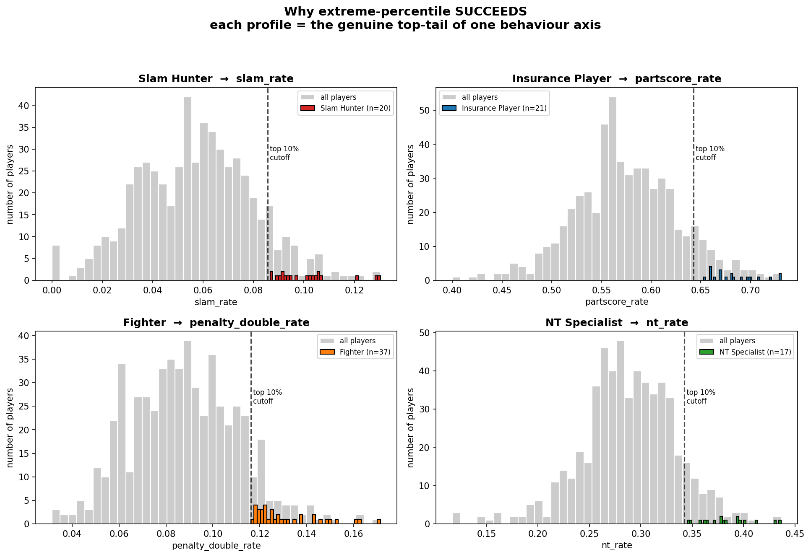

מסמך הכנה אישי. דר' רמי הוא סטטיסטיקאי (לכן התשובות הסטטיסטיות מדויקות ונוקבות), אבל לא מכיר ברידג'
(לכן כל מונח ברידג' מוסבר בפשטות). לכל שאלה: תשובה קצרה, ואם צריך — דוגמה או הערה סטטיסטית.
מה עשינו עד כה — בקצרה
שאלת המחקר: האם סגנון קבלת-ההחלטות של שחקן ברידג' מנבא את התנהגותו במשא ומתן עסקי? הברידג' הוא מעבדה, היעד הוא מו"מ עסקי.
הנתונים: 149,208 שורות מתחרויות ברידג' אירופאיות (2016–2025); אחרי סינון נשארו 563 שחקנים עם מספיק נתונים (≥50 ידיים).
שלב 1 — גילוי פרופילים: חישבנו 8 תכונות התנהגות לכל שחקן. ניסינו K-Means לחלק לקבוצות — נכשל (הנתונים רצף, לא אשכולות). במקום זה השתמשנו באחוזון-קיצון + מבחן בינומי וקיבלנו 4 פרופילים + "כללי".
שלב 2 — חילוץ כישורים: מודל שפה (LLM) קרא את משחקי כל פרופיל והפיק 5–7 כישורים מאפיינים.
שלב 3 — בניית סוכנים: כל פרופיל הפך לסוכן LLM עם "כרטיס אופי" (הכישורים מהברידג', לא תיוג שהמצאנו).
שלב 4 — סימולציה כפולה: כל סוכן שיחק גם ברידג' וגם משא ומתן עסקי; השווינו את דירוג המנצחים עם Spearman ρ.
התוצאה: מדד ברידג' ראשוני נתן ρ=0.20 (חלש) בגלל חריג אחד; אחרי תיקון המדד → ρ=0.80 (מעל היעד 0.70). היסוד מובהק (Cohen's d 2.1–4.6).
הסתייגות מרכזית: n=5 פרופילים → כוח סטטיסטי נמוך. ρ הוא אינדיקציה, והתרומה האמיתית היא מתודולוגית.
🃏 ברידג' ב-90 שניות (כדי שתוכלי לענות לו על הבסיס)
המשחק: 4 שחקנים, 2 זוגות (אתה ושותפך מול 2 יריבים). כל אחד מקבל 13 קלפים.
המכרז (bidding): לפני המשחק יש "מכרז" — כל זוג מבטיח כמה לקיחות (tricks) ייקח. ההבטחה המנצחת נקראת חוזה (contract).
רמות 1–7: חוזה ברמה N = הבטחה לקחת 6+N לקיחות. רמה גבוהה = הבטחה שאפתנית ומסוכנת.
מונחי המפתח שלנו:סלאם = חוזה רמה 6–7 (שאפתני, סיכון גבוה) ·
part-score = חוזה נמוך 1–3 (בטוח, שמרני) ·
NT = משחק בלי "צבע מנצח" ·
דאבל = מהלך תחרותי במכרז (ראו השאלה הייעודית בהמשך — יש לו שני סוגים).
HCP (כוח יד): נקודות לפי קלפים גבוהים (אס=4, מלך=3, מלכה=2, נסיך=1). מודד כמה היד "חזקה".
פאר (par): החוזה האופטימלי תאורטית לחלוקת קלפים נתונה — "מה היה נכון להכריז".
חלק א' — תכונות, נתונים, ויחידת הניתוח
אילו פיצ'רים (תכונות) יש לך? (השאלה ששאל בפעם הקודמת)
10 תכונות התנהגות לכל שחקן, ב-2 משפחות; 8 מהן נכנסו למודל. כל תכונה היא שיעור (יחס בין 0 ל-1).
מתוך "מה הוכרז" (חוזה)
מתוך "איך הוכרז" (מכרז)
slam_rate — שיעור חוזי סלאם
opening_rate — שיעור פתיחת מכרז
nt_rate — שיעור חוזי NT
preempt_rate — פתיחה גבוהה (אגרסיבי)
partscore_rate — שיעור עצירה נמוך/בטוח
intervention_rate — התערבות במכרז היריב
game_rate — שיעור חוזי "משחק"
penalty_double_rate — שיעור דאבלים (כל הסוגים)
double_rate — שיעור חוזים שהוכפלו
avg_bids_per_board — מס' הכרזות לחלוקה
מהי יחידת הניתוח? מהו n?
יחידת הניתוח היא שחקן בודד. n = 563 שחקנים שעברו סף כשירות (≥50 ידיים שהכריזו עליהן וגם ≥50 ידיים עם נתוני מכרז). כל שחקן הוא וקטור של 8 מספרים.
איך בחרת אילו תכונות להכניס? למה 8 ולא 10?
הסרנו 2 תכונות עם שונות נמוכה — מקדם השונות (CV = סטיית תקן ÷ ממוצע) קטן מ-0.10. תכונה שכמעט זהה אצל כולם לא מבדילה בין שחקנים.
דוגמה:avg_level — כל שחקני העילית מכריזים בממוצע סביב רמה 3.3. אם לכולם אותו ערך, התכונה חסרת תועלת — כמו לשאול "למי יש שתי עיניים?".
האם התכונות מתואמות ביניהן? (מולטי-קולינאריות)
כן, בדקנו. "תכונות מתואמות" = שתי תכונות שמודדות כמעט אותו דבר, אז אחת מהן מיותרת. עשינו 2 דברים: (1) הסתכלנו על טבלה שמראה אילו תכונות "כפולות" וזרקנו אותן; (2) הרצנו PCA — טכניקה שמכווצת את התכונות לכמה "צירים חדשים" שלא חופפים זה לזה.
דוגמה: "גובה בסנטימטרים" ו"גובה באינצ'ים" הן לא שתי תכונות — זו אותה תכונה פעמיים. בדיוק את הכפילויות האלה זרקנו.
חלק ב' — למה K-Means נכשל ומהו "רצף"
למה K-Means נכשל? (השאלה ששאל בפעם הקודמת)
K-Means מחפש קבוצות נפרדות ("איים"). בנתונים שלנו אין איים — יש ענן רציף אחד. מדד הסילואט הגיע לכל היותר ל-0.24, בעוד שמבנה אשכולות אמיתי דורש ≥ 0.5. ניסינו k=2 עד 6 — כולם נכשלו.
הערה סטטיסטית: סילואט מודד לכל נקודה כמה היא קרובה לאשכול שלה לעומת השכן: s = (b−a)/max(a,b). ערך סביב 0 = הנקודה על הגבול = אין הפרדה אמיתית.
מה זה "רצף" (continuum)? (השאלה ששאל בפעם הקודמת)
רצף = הנתונים משתנים בהדרגה חלקה, בלי קפיצות שמפרידות קבוצות. אין "סוגים", יש ספקטרום.
דוגמה:גובה הוא רצף — אין פער ריק בין "נמוכים" ל"גבוהים", יש מעבר חלק. סוג דם (A/B/AB/O) הוא קטגוריות נפרדות עם פערים = אשכולות אמיתיים. השחקנים שלנו כמו גובה, לא כמו סוג דם.
אבל אפשר לחתוך גובה ל-150/160/170 — זה לא קבוצות?
אפשר, אבל החיתוך מלאכותי — את ממציאה אותו, הוא לא קיים בטבע. ההבדל: האם יש "חורים ריקים" בין הקבוצות. בגובה אין חור (יש אנשים בכל ערך), אז אדם 159 ו-160 כמעט זהים אבל "נחתכו" לקבוצות שונות. בסוג דם יש חורים אמיתיים — אף אחד לא "בין A ל-B".
המבחן: אם אזיז את קו החיתוך קצת והתוצאה משתנה — אין קבוצות אמיתיות. הסילואט הנמוך (0.24) מאשר שאין מבנה טבעי, אז עברנו לזיהוי הקצוות במקום אשכול.
אם K-Means נכשל — איך הגדרת פרופילים?
באחוזון-קיצון: לקחנו את ה-10% העליונים בכל ציר התנהגות, ואישרנו במבחן בינומי. זה לא ממיין את כולם בכוח — זה מנקד את הזנבות הקיצוניים של הרצף.
דוגמה: "צייד סלאם" = ה-10% עם הכי הרבה סלאמים. "לוחם" = ה-10% עם הכי הרבה דאבלים.

K-Means: כל k נותן סילואט ~0.24, הרחק מתחת ל-0.5 הנדרש. אין אשכולות אמיתיים.
המבחן הבינומי — בשביל מה, ולמה p<0.05?
הוא מאשר שהציון הקיצוני של שחקן אמיתי ולא מקרה של מדגם קטן. השאלה: "בהינתן השיעור הבסיסי באוכלוסייה, מה ההסתברות להגיע לשיעור כה גבוה במקרה?". p<0.05 → לא מקרה.
דוגמה: שיעור סלאם בסיסי ~5.5%; שחקן עשה 10% מתוך 200 ידיים. המבחן בודק אם 10%/200 חורג מובהקית מ-5.5%.
בדקת הרבה שחקנים וצירים — מה עם השוואות מרובות?
שאלה צפויה. כן רלוונטי. הדרכים שלנו: (1) סף שמרני (10% עליונים וגם p<0.05); (2) גדלי האפקט עצומים (Cohen's d 2.1–4.6) — שורדים כל תיקון; (3) נשמח ליישם FDR (Benjamini-Hochberg) — לא ישנה את הפרופילים בגלל גודל האפקט.
המסר: "אני מודעת ל-multiple comparisons; האפקטים עמידים, ואני פתוחה ל-FDR."

כל פרופיל = הזנב הימני (10% העליונים) של ציר התנהגות אחד. אפור=כלל האוכלוסייה, צבע=הפרופיל.
חלק ג' — ולידציה של הפרופילים
מה זה Cohen's d ולמה הערכים 2.1–4.6 חשובים?
Cohen's d מודד גודל אפקט — בכמה סטיות-תקן נבדל הפרופיל מהממוצע. d=0.8 כבר "גדול". הערכים שלנו 2.1–4.6 עצומים — הפרדה כמעט מלאה.
דוגמה: d=2.1 → כמעט כל "צייד סלאם" מעל כמעט כל שחקן רגיל בציר הסלאם. החפיפה זעירה.
גדלי הקבוצות קטנים (20, 21, 37...) — בעיה?
לוולידציה של שלב 1 — לא, כי גודל האפקט עצום וה-p מובהק גם ב-n קטן. הקבוצות: צייד סלאם 20, ביטוח 21, לוחם 37, מומחה NT 17, והשאר "כללי", מתוך 563.
הערה: ה-n הקטן כן הופך לבעיה בשלב 4, כששאלת היחידה היא הפרופיל (n=5).
חלק ד' — הדאבלים, הפייטר, והכובע ההגנתי
מה זה "דאבל", ויש לו סוגים?
דאבל הוא מהלך תחרותי במכרז (מסומן x), ויש לו שני סוגים שונים לגמרי:
סוג
משמעות
שכיחות
דאבל עונשין
"היריב יכשל בחוזה — אני מעניש אותו" (נגד היריב)
נדיר
דאבל הזמנה (takeout)
"שותף, בוא תכריז משהו" (שיתופי עם השותף)
נפוץ
אותה מילה (x), שתי כוונות הפוכות.
⚠️ התכונה נקראת penalty_double_rate — היא סופרת רק עונשין?
לא — וזו הערת דיוק חשובה. בדקנו בקוד: התכונה סופרת את כל הדאבלים (גם הזמנה וגם עונשין), לא רק עונשין. השם מטעה. אבל זה בסדר: שני הסוגים הם בחירה להיכנס ולהילחם במכרז במקום לפסוח, אז המדד תקף לתחרותיות אגרסיבית. השם המדויק: "דאבלר תוקפני", לא "מעניש". המספרים ו-ρ לא משתנים — רק השם.
המסר לבוחן ברידג': "33% דאבלי עונשין היה לא ריאלי — אבל 33% דאבלים מכל סוג הגיוני לשחקן תחרותי. הסיגנל אמיתי, רק השם דורש דיוק."
למה דאבל הוא תכונה של פייטר? כולם עושים דאבל הזמנה...
המפתח: לא "האם עושה דאבל" אלא "כמה הרבה". הפייטר ב-10% העליונים — פי 2–4 מהממוצע. הרבה דאבלים (מכל סוג) = שחקן שלא מוותר, כל הזמן נכנס לקרב במקום לפסוח. זה הסגנון התוקפני.
אנלוגיה: שחקן כדורסל שעושה עבירות פי 3 מכולם — את יודעת שהוא אגרסיבי, בלי קשר לסוג העבירה.
הפיצ'רים מתייחסים להתקפה או להגנה?
לשניהם, אבל לא מאוזן. רוב הפיצ'רים הם התקפה (החוזה שהשחקן הכריז: סלאם/NT/partscore). 2 פיצ'רים הגנתיים:intervention_rate ו-penalty_double_rate (דאבל = פעולה הגנתית, להפיל את היריב).
מגבלה כנה: כל הפיצ'רים הם משלב המכרז בלבד — אין לנו נתוני משחק-קלפים, אז "הגנה בשולחן" לא נמדדת. כיוון לדוקטורט.
חלק ה' — המשא ומתן, התהליך, והיישור (שלב 4)
איך עובד המשא ומתן? מי מנהל אותו?
כל פרופיל (סוכן LLM) משחק קונה ב-4 תרחישים עסקיים, מול מוכר קבוע שאינו LLM (נוסחה: מוותר בהדרגה לכיוון "רצפה"). כך ההבדלים נובעים מהקונה, לא מרעש של מוכר משתנה.
דוגמה: רכישת SaaS — הוגן 9M, המוכר פותח 13M, רצפה 8M. הקונה מנסה להוריד מחיר עד 4 סבבים.
איך מוגדר "ניצחון" בכל תחום?
בברידג': כמה קרוב השחקן הכריז ל"חוזה הנכון" (par). במו"מ: איזה אחוז מהפער תפס הקונה — (פתיחה − סופי)/(פתיחה − רצפה). שניהם בין 0 ל-1, ממוצע על כל הידיים/התרחישים.
מה זה Spearman ρ ולמה לא Pearson?
Spearman ρ הוא מתאם על דירוגים, לא על הערכים. השאלה שלנו על סדר: "מי שמנצח בברידג' מנצח גם במו"מ?". הוא עמיד לחריגים ולא מניח קשר ליניארי.
דוגמה: אם בברידג' A>B>C וגם במו"מ A>B>C → ρ=1, גם אם הערכים שונים.
n=5 פרופילים — כוח סטטיסטי? ה-p לא מובהק!
נכון, וזו ההסתייגות המרכזית שאני מציינת מפורשות. עם n=5 גם ρ=0.80 נותן p≈0.10. לכן ρ הוא אינדיקציה ולא הוכחה, והתרומה היא מתודולוגית.
המסר: "אני לא טוענת למובהקות; אני טוענת לעיקרון מתודולוגי שהודגם, עם תוכנית להגדיל את ה-n."
שינית את המדד אחרי שראית את התוצאה — זה לא p-hacking?
השאלה הכי חשובה. לא, מ-3 סיבות: (1) ה"לוחם" מוגדר ע"י דאבלים כבר משלב 1 — המדד מודד את הכישור שלו עצמו; (2) מומחה הברידג' חזה את הבעיה מראש, לפני שראינו ρ; (3) בחרנו משקל מתון (0.3), לא הממקסם (0.4 היה נותן 0.90), והצגנו ניתוח רגישות.
המסר: "התיקון a-priori ומוגדר-תאורטית, לא חיפוש אחורה. משקל מתון + sensitivity analysis מונעים garden-of-forking-paths."
לפני (par בלבד, ρ=0.20) מול אחרי (מדד מודע-לחימה, ρ=0.80). ה-Fighter (כתום) זז אל האלכסון.
למה נשאר היפוך בין Insurance ל-Generalist?
ההיפוך היחיד שמחזיק את ρ על 0.80 ולא 1.0, וזה ממצא: שחקן ה"ביטוח" (השמרן) חלש בברידג' אבל חזק במו"מ. שמרנות פוגעת בברידג' (מכריז נמוך מדי) אבל עוזרת במו"מ (סבלנות, סגירה יציבה). אותה תכונה עוברת בכיוון הפוך.
איך התמודדת עם אי-הדטרמיניזם של ה-LLM?
גם ב-temperature=0 ה-LLM נותן תשובות שונות (GPU מקבילי). הפתרון: כל יד רצה 3 פעמים והוכרעה בהצבעת רוב; כל פלט נשמר ל-JSONL. הרפרודוקטיביות ברמת המדגם, לא הקריאה הבודדת.
חלק ו' — התמונה הגדולה והדוקטורט
למה ברידג' בכלל? איך זה קשור לעסקים?
נתוני מו"מ אמיתיים סודיים ולא נמדדים. ברידג' הוא מעבדה נקייה לאותן החלטות (מתי לקחת סיכון, מתי לעצור, מתי ללחוץ), עם 149K תוצאות מדידות. אם הפרופיל מהברידג' מנבא מו"מ — קיבלנו דרך ללמוד אסטרטגיה עסקית בלי נתונים פרטיים.
מה התרומה אם המספר לא מובהק?
מתודולוגית:מדד ההצלחה בכל תחום חייב לתפוס את הכישור הרלוונטי לאותו תחום. מדדנו ציר לא-נכון בברידג' וזה הסתיר קשר אמיתי; ברגע שהמדד תפס את הלחימה — הקשר הופיע. עיקרון שמתקף את עצמו ולא תלוי ב-n.
מה הצעדים הבאים לדוקטורט?
(1) להגדיל את ה-n (יותר פרופילים ותרחישים) למובהקות; (2) מדד ברידג' עשיר יותר / מנוע double-dummy; (3) הפרדת דאבל הזמנה מעונשין; (4) נתוני משחק-קלפים (הגנה בשולחן); (5) בקרת פרומפט-הפוך בפועל.
💡 טיפ אחרון לפגישה: אם הוא לוחץ על נקודה — אל תתגונני. "נקודה טובה, אני מודעת, וזו בדיוק הסיבה ש-X". כל ההסתייגויות (n קטן, multiple comparisons, p-hacking, שם הדאבל) כבר מתועדות מראש — זה מראה בגרות מחקרית.